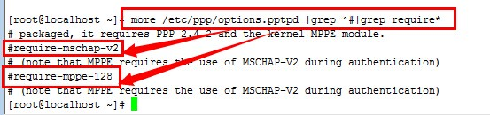

1 环境
系统：centos 7.2 1511
2 详细步骤
2.1 验证内核是否加载了MPPE模块：
内核的MPPE模块用于支持Microsoft Point-to-Point Encryption。Windows自带的VPN客户端就是使用这种加密方式，主流的Linux Desktop也都有MPPE支持。其实到了我们这个内核版本，默认就已经加载了MPPE，只需要使用下面命令验证一下，显示MPPE ok即可：
1 | modprobe ppp-compress-18 && echo MPPE is ok |
2.2 安装所需的软件包：
1 | yum install –y ppp pptpd iptables |
2.3 修改ppp配置文件
配置ppp需要编辑它的两个配置文件，一个是option（选项）文件，一个是用户账户文件。首先编辑option文件：
1 | vi /etc/ppp/options.pptpd |
1 | vi /etc/ppp/chap-secrets |
这个文件非常简单，其中用明文存储VPN客户的用户名、服务名称（option.pptpd文件name pptpd vpn的服务器名字）、密码和IP地址范围，每行一个账户：
1 | username1 pptpd passwd1 * |
其中第一第三列分别是用户名和密码；第二列应该和上面的文件/etc/ppp/options.pptpd中name后指定的服务名称一致；最后一列限制客户端IP地址，星号表示没有限制。
2.4 修改pptpd配置文件
1 | vi /etc/pptpd.conf |
其中option选项指定使用/etc/ppp/options.pptpd中的配置；logwtmp表示使用WTMP日志。
后面两行是比较重要的两行。VPN可以这样理解，Linux客户端使用一个虚拟网络设备ppp0（Windows客户端也可以理解成VPN虚拟网卡），连接到服务器的虚拟网络设备ppp0上，这样客户端就加入了服务器端ppp0所在的网络。localip就是可以分配给服务器端ppp0的IP地址，remoteip则是将要分配给客户端ppp0（或者虚拟网卡）的。
这两项都可以是多个IP，一般localip设置一个IP就行了，remoteip则视客户端数目，分配一段IP。其中remoteip的IP段需要和localip的IP段一致。
localip和remoteip所处的IP段可以随意些指定，但其范围内不要包含实际网卡eth0的IP地址。一般情况下，使用上面配置文件中的配置就好使了，你需要做的只是把192.168.0.207-217这个IP区间修改成你喜欢的192.168.0.a-b，其中1<a<b<255。
2.5 打开内核的IP转发功能：
1 | vi /etc/sysctl.conf |
修改为：
1 | net.ipv4.ip_forward = 1 |
然后执行下面命令使上述修改生效：
1 | sysctl –p |
2.6 配置iptables防火墙放行和转发规则：
最后，还需要配置防火墙。这里配置防火墙有三个目的：一是设置默认丢弃规则，保护服务器的安全；二是放行我们允许的数据包，提供服务；三是通过配置nat表的POSTROUTING链，增加NAT使得VPN客户端可以通过服务器访问互联网。总之我们的原则就是，只放行我们需要的服务，其他统统拒绝。
首先介绍跟PPTP VPN相关的几项：
允许GRE(Generic Route Encapsulation)协议，PPTP使用GRE协议封装PPP数据包，然后封装成IP报文
放行1723端口的PPTP服务
放行状态为RELATED,ESTABLISHED的入站数据包（正常提供服务的机器上防火墙应该都已经配置了这一项）
放行VPN虚拟网络设备所在的192.168.0.0/24网段与服务器网卡eth0之间的数据包转发
为从VPN网段192.168.0.0/24转往网卡eth0的出站数据包做NAT
如果你其他的防火墙规则已经配置好无需改动，只需要增加上述相关VPN相关的规则，那么执行下面几条命令即可（第三条一般不用执行，除非你原来的防火墙连这个规则都没允许，但是多执行一遍也无妨）：
1 | iptables -A INPUT -p gre -j ACCEPT |
3 问题总结
使用centos 6.5部署vpn pptp
遇到连接错误，总是连接不上
3.1 日志错误1：
1 | [root@localhost log]#vi /var/log/messages |
相关配置文件
1 | [root@localhost ~]# more /etc/pptpd.conf |grep -v ^# |
我使用的centos 6.5 64bit ，相关安装包如下：
1 | [root@localhost ~]# rpm -qa |grep "ppp*" |
现在不知道问题出在什么地方，麻烦各位帮忙看看，谢谢！！！
已经解决，修改配置
1 | options.pptpd把 |
这两行注释掉即可。如下图：

这里是关闭加密，跳过加密。此方法修改过没有用处。
3.2 错误2：
1 | [root@webserver ~]# sysctl -p |
版本没错但是发现转发有错
加载模块然后重启解决
1 | [root@webserver ~]# modprobe bridge |
此处是重新加载bridge模块，重新加载了，没有作用，后来实验，发现是否重新加载，都不影响vpn使用,最终就没管他，不知道是否有影响。
最终如何解决的，其实也没有做什么修改，就是重新yum remove –y ppp* pptp*后，重新yum install –y ppp* pptp* iptables* 后，多次重启，和重设置vpn帐号，又可以用了，I don’t know why.
最终解决方案：
后来发现一个问题，当客户端开启防火墙的时候就能连接，当关闭防火墙的时候就无法连接报错。I don’t know why.